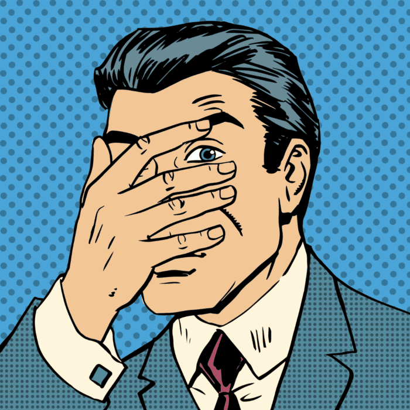
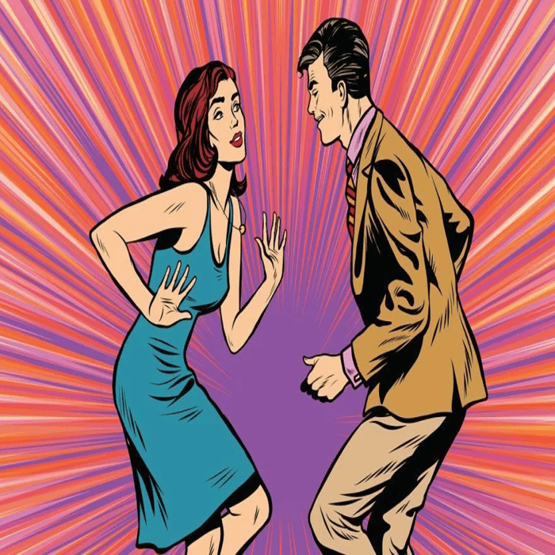
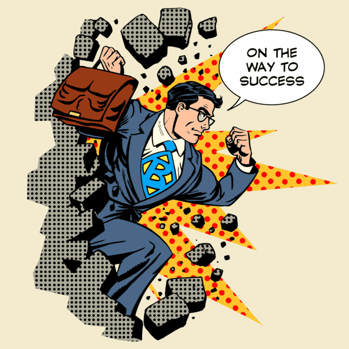

Фритрек и нулевой спринт: Подготовка к работе
</HTML>
Это было самое начало пути. На этом этапе важно было проникнуться основами и настроиться на учебу. И, возможно, подумать, как новые знания могут повлиять на ваше будущее.
Начало обучения, кажется будто все дороги открыты и ничто не может тебя остановить на пути к новым знаниям.
1 спринт: Я — чистый лист
</HTML>
На первых этапах мы работали со страхами и сомнениями, которые часто испытывают новички. Один из них — страх перед чистым листом. Это, конечно же, намного сложнее, чем боязнь куска бумаги. Часто за этим ощущением скрываются более глубокие вопросы: с чего начать? а вдруг будет слишком сложно? что, если я не справлюсь?
Будучи еще чистым листом, я с предвкушением и страхом смотрел на каждую новую тему, старался понять почему это работает именно так как работает и не принимал за данность.
1 спринт: А если не получится?
<CSS>
Первый проект — позади! Но это всё ещё самое начало пути. Радость могла быстро померкнуть и смениться ожиданием провала. Или вы, наоборот, могли вдохновиться успехами и поверить в себя.
Первый проект показал мне: все, что я делал до этого, имеет смысл уже сейчас.
2 спринт: Погоня за идеалом
<desigions>
На этом этапе вы уже достаточно разбирались в основах вёрстки, чтобы понять, как много ещё впереди. Вы могли попытаться погнаться за идеалом и понять, что он недостижим. А, может, вы вовсе и не подвержены перфекционизму и вместо того, чтобы сделать идеально, старались просто сделать.
Все мои эмоции на этом этапе очень точно описывает известная всем фраза древнегреческого философа: «Я знаю, что я ничего не знаю».
2 спринт: О тех, кто рядом
<care>
Всё это время вы были не одиноки (хотя, возможно, иногда и чувствовали, что одни против целого мира). Вас окружали одногруппники, команда сопровождения и просто близкие люди, которым можно пожаловаться, если очередной макет просто так не поддавался. Осваивать что-то новое легче, когда рядом есть единомышленники, не правда ли?
Если бы не мое окружение, я бы не был там, где сейчас нахожусь. Поэтому я выражаю им огромную любовь и признательность, надеюсь вы и дальше продолжите меня поддерживать.
3 спринт: Обходные стратегии
<support>

На этом курсе вы постоянно решали разные задачи. В какой-то момент вам могло показаться, что решения просто иссякли. Значит, пришло время посмотреть на задачу под другим углом.
Иногда даже самая простая задача могла занять целый день, заставляя чувствовать себя беспомощным. Но как только находился подход, грудь наполнялась чувством, словно я Давид, сразивший Голиафа.
3 спринт: Когда опускаются руки
<lifes-style: none;>
Во время учёбы часто возникает чувство, когда не знаешь, за что хвататься. Вроде и проектную пора сдавать, и задачи хочется порешать, и в теории получше разобраться, и жизнь не забыть пожить. В такие моменты очень нужна концентрация. Вспомните, откуда вы её черпали.
Учеба, работа, курсы. Не забыть про все и успевать жить для себя. Сложность, которую не обходимо решить, чтобы сделать свою жизнь лучше и интереснее. Никогда не забывать про мотивацию и дисциплину.
«Сейчас я здесь»
<experience>
Сейчас вы уже очень много знаете о вёрстке. Но это только начало. Во-первых, впереди ещё много материала про «красотищу». Во-вторых, с окончанием курса учёба не заканчивается. Вёрстка — это целый мир. И этот мир постоянно меняется. Познать его полностью не получится, но это тот случай, когда важен сам процесс познания. Ведь часто путь — и есть результат.
Сейчас я вижу, чего мне еще не хватает в знаниях по верстке. Я продолжу идти этой дорогой, ради лучшего будущего